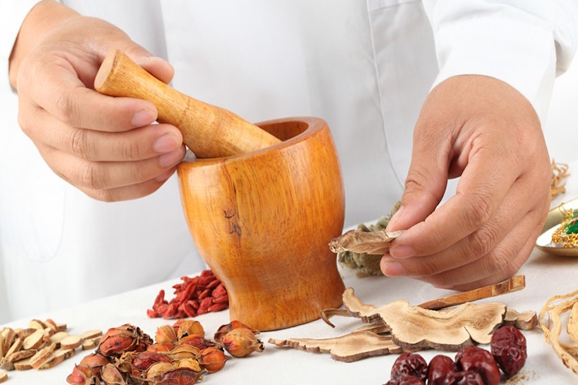

À propos de la Chine - Culture
Sur ce site, nous voulons t'expliquer un peu la culture de la Chine. Mais, du fait de la complexité de chaque culture cela ne peut être qu’une initiation. A suivre : un chapitre sur les jours fériés les plus importants, un sur les conceptions de visage et relation, un sur la philosophie et la religion, un sur la médecine traditionnelle chinoise, de même qu'une courte introduction sur l'art chinois. Si tu es intéressé par d'autres informations ou à des exposés plus détaillés, tu trouveras d'autres links dans « links & downloads ».
La société chinoise a développé comme toutes les autres, ses propres rites et coutumes et même si aujourd'hui une ville chinoise ressemble beaucoup à une ville occidentale, il y a, malgré tout, des coutumes et des traditions différentes.
Jours fériés

En Chine il y a de nombreux jours fériés que nous connaissons seulement par ouï-dire en Europe. Evidemment beaucoup de Chinois dans les grandes villes fêtent Noël, la saint Valentin et le nouvel an mais la manière dont ils fêtent est très différentes de la manière occidentale. La plupart des jours fériés chinois dépendent du calendrier lunaire et n'ont donc pas une date fixe dans l'année. Ils viennent d'anciennes traditions centenaires ou millénaires et se fêtent normalement dans le cercle familial ou d'amis proches. Quelques-unes des plus importantes sont les suivantes :
- La fête du printemps – La fête du nouvel an chinois :
La fête du printemps commence chaque année entre le 21 janvier et le 21 février (Deuxième nouvelle lune après l'équinoxe d'hiver) et se termine le quinzième jour avec la fête des lanternes. C'est la plus importante fête de famille en Chine – à comparer en occident avec le temps entre Noël et le jour de l'an – et est fêté aussi à l'extérieur des frontières. Avant cette fête, des centaines de millions de travailleurs immigrés rentrent, chaque année, dans leur famille pour quelque temps. C'est souvent décrit comme la plus grande » migration de l'histoire «. En général on prépare déjà au plus tard la veille du nouvel an le repas et on décore les maisons avec des symboles du bonheur rouges et de l'animal du zodiaque auquel l'année qui commence est dédiée. Les membres célibataires de la famille reçoivent de l'argent dans une enveloppe rouge, on mange et boit ensemble et on fait un feu d'artifice. En général, le premier jour, on se réunit avec la famille du côté paternel et un des jours suivants, du côté maternel. De plus, c'est la coutume pendant ces journées d'honorer les ancêtres et de leur apporter aussi des cadeaux. Tu ne dois surtout pas laisser passer cette fête dans le cercle de ta famille d'accueil. Tu vivras certainement des moments inoubliables.
- La fête de Qingming :
La fête de Qingming a lieu début avril (le 4,5 ou 6) ; elle est dédiée aux morts. On nettoie les tombes, allume des bâtonnets d'encens et offre aux ancêtres des fruits et de l'argent en papier que l'on brûle.
- La fête des bateaux dragons
La fête des bateaux dragons se trouve toujours le cinquième jour du cinquième mois de lune (début juin) et est fêtée avec des courses de bateaux dragons multicolores. Traditionnellement, pour cette fête, on mange Zongzi, du riz collant enveloppé dans des feuilles. D’après la légende, la fête remonte au noble Qu Yuan, à l'époque des royaumes qui se combattaient. A cause de ses opinions politiques, il avait été banni de la cour. Désespéré, il s'était jeté dans le fleuve Miluo, où les habitants essayèrent vainement de le sauver avec leurs bateaux.
- La fête de la lune et du milieu de l'automne :
La fête de la lune a lieu le 15ème jours du 8ème mois de lune( entre début septembre et début octobre). Ce jour-là, la pleine lune a une taille maximum et pour fêter cela, on fait cuire des gâteaux sucrés, fourrés différemment partout en Chine et on les offre à des collègues, des parents et des amis.
- La fête nationale (à partir du 1er octobre) :
La fête nationale commence chaque année le 1er octobre et rappelle la fondation de la république populaire de Chine en 1949. Comme on a une semaine de vacances pour cette fête, elle est beaucoup utilisée pour voyager.
Si tu devais voyager seul pendant les jours de fête, il est à conseiller de réserver ses billets à l'avance, car énormément de gens voyagent à cette période.
Visage et relations

Les concepts de visage (Mianzi) et relations (Guanxi) prennent leur origine dans la philosophie du confucianisme et sont aujourd'hui encore des fondements de la vie chinoise. En général, on peut dire que les Chinois mettent l'accent sur l'harmonie entre les humains et perdre et sauver la face ainsi que les relations sont considérés comme des directives de la manière de se comporter.
- Mianzi:
Le « visage » d'une personne est pour ainsi dire l'image perceptible de sa dignité et de son statut social. Sauver la face devant quelqu'un élève son propre statut, fait paraître bienveillant et généreux. Perdre la face est considéré comme immature et sans maîtrise.Cela veut dire que, en Chine, tu dois faire attention de ne pas critiquer quelqu'un directement en présence d'autres personnes. Si tu veux dire que tu n'es pas d'accord, il faut d'abord exprimer de la compréhension pour le point de vue de l'autre et ensuite exposer son propre point de vue. Si tu voudrais entendre la critique d'autres personnes sur une chose (ex. politique) le plus simple, c'est de les louer d'abord au maximum pour ainsi offrir à l'autre assez de place à la présentation de son point de vue.
- Guanxi:
L'importance des relations en Chine provient de son histoire mouvementée. Ainsi, pour les Chinois, des relations stables sont souvent plus importantes que les lois. Par ex. quand on voudrait faire la connaissance de quelqu'un, c'est la coutume d'être présenté par quelqu'un d'autre. C'est une marque de confiance. Si l'on a de bonnes relations aux autres on ne doit pas avoir peur de leur demander un service. Alors, même des choses qui semblent insolentes pour des occidentaux sont une évidence pour les Chinois. Par ex. un ami Chinois te proposerait toujours, sans conditions, une place pour dormir quand tu es dans la ville. De même, les relations sont un bon moyen pour faire disparaître des désaccords en demandant à une troisième personne de servir d'intermédiaire.
Cela veut dire aussi que si tu as des projets pour plus tard en Chine, ta famille d'acceuil t'aidera ou te présentera des gens qui pourront t'aider.
Religion et philosophies

Bien que plus de 90% des Chinois se décrivent officiellement comme sans religion, les religions et les opinions de leurs aïeux ont encore une grande influence sur leur vie présente et les temples dans tout le pays sont à nouveau très fréquentés. Pour les Chinois, ce n'est pas une contradiction. Déjà Deng Xiaoping, le père de l'essor chinois disait : » quelle importance qu'un chat soit blanc ou tacheté ? Le principal est qu'il attrape des souris !» et dans les vieux textes chinois, il n'est pas inhabituel que des moines bouddhistes, taoistes ou de Confucius donnent côte à côte des conseils aux croyants.
Cela explique aussi pourquoi des courants de pensée comme le Fengshui ont pu se développer en Chine, bien qu'ils diffèrent beaucoup d'une région à l'autre et d'un professeur à l'autre. De même, le taoïsme se retrouve fortement dans la médecine traditionnelle chinoise ; elle comprend l'être humain comme une unité de corps, esprit et environnement et utilise des concepts comme Yin et Yang ou l'énergie vitale Qi. De même, les points de vue religieux et philosophiques classiques se divisent, c'est à dire le bouddhisme, le taoïsme et le confucianisme en plusieurs écoles et effacent souvent leurs frontières.
Donc celui qui s'intéresse aux différentes religions et philosophies d'extrêmes Orient trouvera justement en Chine de nombreux courants et écoles qui ont encore une forte influence sur la vie et la manière d'agir des Chinois.
- Le Confucianisme:
Confucius ou Kongzi (551 – 479 av. Chr.) est né dans l'état de Lu (aujourd'hui province Shandong) comme fils d'une famille aristocratique. Après la mort de sa mère, il quitta son travail de fonctionnaire pour enseigner ses visions.
Sa philosophie souligne le rôle d'une personne dans la société et l'action appropriée par rapport à cette position. Il a essayé de tirer des enseignements du passé et considérait l'époque des guerres dans laquelle il vivait comme le déclin de la civilisation. Il admirait les dynasties avant l'ère chrétienne qui avaient unifié de grandes parties de la Chine. Ses disciples ont rédigé sur papier ce qui a été transmis aujourd'hui de sa philosophie. Lui-même n'a pas rédigé d'écrits ;
Cinq pensées principales devraient diriger la vie des êtres humains :
- Ren (L’humanité) exige l'action bienveillante entre les hommes. Il définit quelles personnes l'on doit ou ne doit pas respecter.
- Li (Le rite) souligne les relations rituelles entre les êtres humains. Il s'agit de règles de politesse et de comportements qui définissent comment le Ren doit être vécu.
-
Xiao (La fidélité vis à vis des parents) exige l'obéissance et le respect par rapport aux parents, ancêtres et enseignants. Le plus fort Xiao se trouve entre père et fils et dépasse même la loi.
- Zhong (La loyauté) est la transcription du Xiao à l'échelle professionnelle. La loyauté n'exige pas une obéissance aveugle mais de pouvoir aussi conseiller en le corrigeant un supérieur qui se serait trompé.
-
Junzi (L'homme noble) : le but de chacun doit être de devenir un gentilhomme en employant les principes nommés plus haut dans chaque situation.
- La Taoisme:
L'origine exacte du taoïsme n'est pas élucidée car il s'est formé comme religion seulement pendant la dynastie Tang (618 – 917 ap. Chr.). L'avis le plus partagé est que Lao Tse, qui vivait à peu près au même moment que Confucius, fonda le Taoïsme avec son livre, le Daodejing (écrits du chemin et de de la vertu). Lao Tse était archiviste dans l'état de Ku et il quitta plus tard son poste pour voyager dans le pays. Il ne fonda pas volontairement le Taoïsme mais écrivit seulement ses points de vue sur le monde. Le Taoïsme fut fortement influencé plus tard par les écrits de Zhuangzi et le Bouddhisme qui lui donna ses dieux et ses rites.
Le Taoïsme ne propage pas de forme de société spéciale mais le retour des humains vers la nature. Dans le Daodejing est écrit : » plus il y a de tabus et d'interdictions dans le monde, plus les humains deviendront pauvres. » La pensées principale du taoïsme tourne autour du Dao, le chemin, une force sans fin qui ne peut pas être comprise mais que l'on peut observer partout dans la nature. Yin et Yang viennent au monde par le Dao. Ce sont deux forces opposées mais dépendantes l'une de l'autre en toutes choses. Elles se comportent comme le flux et le reflux.
Les lignes directrices du Taoïsme sont :
- Wuwei (sans but) : cela encourage à laisser les choses se passer et agir sans intentions.
- Ziran (La nature) : d'après cela, il faut agir selon la nature et être spontané. Wuwei et Ziran sont dépendants l'un de l'autre : Wuwei représente la capacité d'évaluer la nature d'une autre personne, d'estimer son Ziran. Ziran d'un autre côté permet d'agir selon le Wuwei.
- San Bao (Trois trésors) : les trois trésors sont le Jing, la force de vie, le Qi, l'essence de l'être et le Shen, l'intelligence et la spiritualité. Seulement celui qui harmonise ces trois forces peut atteindre la vie éternelle.
On recommande souvent aux occidentaux de jeter un coup d'œil sur le passé romantique pour mieux comprendre la vision taoïste de la nature.
- Le Bouddhisme:
Siddhartha Gautama (celui qui a atteint son but, 563 – 483 av. Chr.) est né comme prince à Kapilavastu (Népal). Après qu'il ait vu la souffrance pour la première fois dans le monde, il quitta le palais à 29 ans pour trouver la vérité parfaite et une issue à la souffrance. Après une méditation d'abord vaine, il s'assit sous un arbre et y resta jusqu'à ce qu'il atteigne son but. Il y réussit à l’Age de 35 ans et il devint Bouddha (L'illuminé) et passa le reste de sa vie à enseigner ses vues.
La vie de Bouddha a été écrite seulement 500 ans après sa mort et le bouddhisme atteignit aussi la Chine à cette période. Mais il se heurta à la tradition confucianiste et ne put pas vraiment s'installer avant la dynastie Tang (618 – 917 ap. Chr.)
Le bouddhisme venait de l'hindouisme. Celui-ci enseigne que la vie est un cycle de renaissances sans fin. En quoi l'on renait dépend de son karma, de la somme de bonnes ou mauvaises actions, paroles et pensées. Le bouddhisme offre une issue à ce cycle de renaissances selon les quatre vérités nobles :
- Toute vie est souffrance.
- La souffrance vient du désir.
- Cesser de désirer fait cesser la souffrance.
- Cela peut être atteint grâce au chemin octuple.
Le chemin octuple comprend de vraies opinions, de vraies intentions, de vrais discours, de vrais comportements, de vrais modes de vie, de vrais efforts, de vraies pensées et de vraies aspirations.
Qui maîtrise le chemin octuple va au Nirvana. Selon la confession bouddhiste il est possible de revenir du Nirvana dans le cycle de la vie et de renaître. Cela est mis en valeur surtout dans le Lamaïsme où le Dalaï Lama est considéré comme la réincarnation de l’Avalokitésvara.
- Fengshui:
Comme nous l'avons dit déjà, les enseignements du Fengshui diffèrent fortement selon les époques, les régions et les enseignants. Bien que quelques débuts du Fengshui soient déjà documentés avant l'époque chrétienne, le nom apparaît seulement pendant la dynastie Song (960 – 1279). La pensée commune est que la vie personnelle ne dépend pas seulement des valeurs morales et de ce qu'on fait mais d'autres forces aussi. Ces forces sont Qi, Yin et Yang, les démons, les esprits, les propres ancêtres, les dieux et d'autres choses. Les maitres Fengshui offrent une orientation par rapport à ces forces pour rendre une vie heureuse possible. En Chine, ces maitres sont consultés à plusieurs occasions comme par ex. pour fixer la date de mariage ou trouver un nom pour ses enfants.
La médecine traditionnelle chinoise (MTC)

La médecine occidentale ne s'est pas développée avant le 19ème siècle en Chine. Avant, la médecine traditionnelle était pratiquement la seule source de soins médicaux. Elle part du principe d'unité et utilise intensivement les herbes, l'acuponcture et les massages. De plus, elle est très liée à la philosophie chinoise et n'est pas compréhensible sans cela. Surtout depuis les années 1950, la MTC trouve un accueil de plus en plus favorable en Occident.
La MTC s'est développée lentement au long des millénaires. Les premiers traitements par acuponcture ont eu lieu déjà vers l'an 2800 av. J.Chr. Pendant l'ère préchrétienne, les premiers écrits sur les herbes et des méthodes de soins ont été rédigées et avant l'unification de la Chine, une science s'était déjà développée. Bien que les principaux concepts de MTC soient apparus sous la dynastie Han (210 av.Chr. - 220 ap.Chr.), la notion de « médecine traditionnelle chinoise » n'est pas apparue avant 1960. Sur l'ordre de Mao Zedongs une classification scientifique des méthodes de traitement a été constituée pour établir des soins peu couteux et débarrassés de la superstition pour la population paysanne.
Le point de départ du traitement dans la MTC est toujours global. Cela veut dire, que, d'un côté, pas une partie du corps n'est considérée seule. De l'autre côté, le patient ne peut pas non plus être séparé de l'environnement et de la société. C'est pourquoi, cela ne suffit pas d'examiner le patient seulement physiquement. En plus il faut lui poser plusieurs questions sur ses conditions de vie.
L'échange entre MTC et la philosophie est visible dans le choix des mots des modèles d'explication. Des concepts importants comme Qi, Yin et Yang viennent de réflexions taoïstes et le modèle des cinq éléments se retrouve aussi dans le Fengshui.
- Qi:
Qi est l'essence de l'être. Tout l'univers est inondé par Qi, et selon le Dao celui-ci se trouve dans un fleuve continuel. Là où le qi s'épaissit, il forme des êtres vivants comme des pierres, des oiseaux ou des humains. Cela veut dire aussi que tous les êtres sont reliés par le fleuve du Qi. Ses mouvements provoquent des changements comme par exemple la succession des saisons.
- Yin et Yang:
Yin et Yang marquent les deux pôles opposés d'une qualité. Yin est le stable, passif, froid, humide, sombre, intérieur et Yang le changeant, actif, chaud, sec, clair et extérieur. Toutes les choses peuvent être mises dans la catégorie du Yin ou du Yang. Ni Yin ni Yang sont bons ou mauvais en soi. Une appréciation n'est possible que s'ils sont mis en rapport l'un à l'autre. Il y a cinq relations de base Yin et Yang :
- Interaction Ying-Yang : celle-ci est décisive pour la création de toute chose. Un exemple est le rapport sexuel entre homme(Yang) et femme (Yin).
- Les contraires Yin-Yang : l'équilibre peut être conservé par le contraste entre Yin et Yang. Par ex. le repos (Yin) dans la nuit nous permet d'être actif (Yang) le jour.
-
La dépendance Yin-Yang : les deux ne peuvent pas exister l'un sans l'autre. Par ex. aucune action (Yang) n'est possible sans le corps (Yin). Mais sans actions (Yang) comme manger ou boire, le corps ne peut pas être conservé.
- Yin et Yang grandissent et diminuent : quand Yin grandit, Yang doit diminuer d'autant ; un équilibre quantitatif demeure. Par ex. les actions (Yang) dominent le jour et le repos (Yin) la nuit.
-
Transformations Yin-Yang : à partir d'un certain point pendant la croissance ou la diminution, une qualité change son caractère dominant et passe du Yin au Yang ou le contraire. Par ex. le corps humain transforme des aliments (Yin) en énergie et actions (Yang).
Pour établir un diagnostic en MTC il est nécessaire de considérer les relations entre Yin et Yang. Car les maladies arrivent quand celles-ci sont perturbées.
- Les cinq éléments (Wu Xing) :
Dans la MTC les interactions sont expliquées à partir des cinq éléments qui représentent aussi une partie du corps. Ceux-ci sont : le bois (foi), le feu (cœur), la terre (rate), le métal (poumon) et l'eau (reins). Tous les éléments sont reliés les uns aux autres par les concepts d'entrave et création qui garantissent l'équilibre dans la nature – par ex. : la terre entrave l'eau, l'eau crée le bois et le bois entrave à nouveau la terre, en se nourrissant de celle-ci. De même les cinq éléments représentent des processus : l'eau coule vers le bas, le feu va vers le haut, le bois se dilate, le métal se déforme et la terre permet la croissance. Comme avec le Yin et Yang, ces processus peuvent se rapporter aux humains et à ses interactions avec l'environnement. Quand l'équilibre est perturbé la maladie arrive et avec, le besoin d'un traitement.
L'art
Dans le domaine de l'art, la Chine n'est en retard sur aucun autre pays. La plupart des gens pensent à la peinture sur soie, calligraphie ou musique chinoise traditionnelle quand ils pensent à l'art chinois. Mais justement en Chine, beaucoup d'autres choses sont considérées comme de l'art. Les arts martiaux chinois et l'acrobatique contemporaine sont mondialement connus. Shanghai avec le M50 et Pékin avec le 798 ont de grands quartiers d'art permanent dans lesquels on peut admirer librement de l'art contemporain sans payer d'entrée. On joue dans de nombreux bars de la musique moderne chinoise, le « Mandopop » qui s'oriente fortement vers la musique occidentale. La jeune littérature chinoise et les films sont toujours l'occasion de discussions et sont aussi critiques vis à vis de la société. En Chine, l'art se développe vite avec le temps parce qu'il n'y a pas autant d'aides financières que dans les nations industrielles occidentales. Dans les nombreux théâtres des grandes villes, des thèmes actuels sont souvent travaillés dans de nouvelles pièces et d'anciennes pièces rénovées sont rejouées. On peut passer un an dans une ville comme Pékin sans avoir tout vu.
Comme toutes les formes d'art dépasseraient le cadre de notre Homepage nous te prions, si tu es intéressé de regarder à « links & Downloads » sur les sites web.